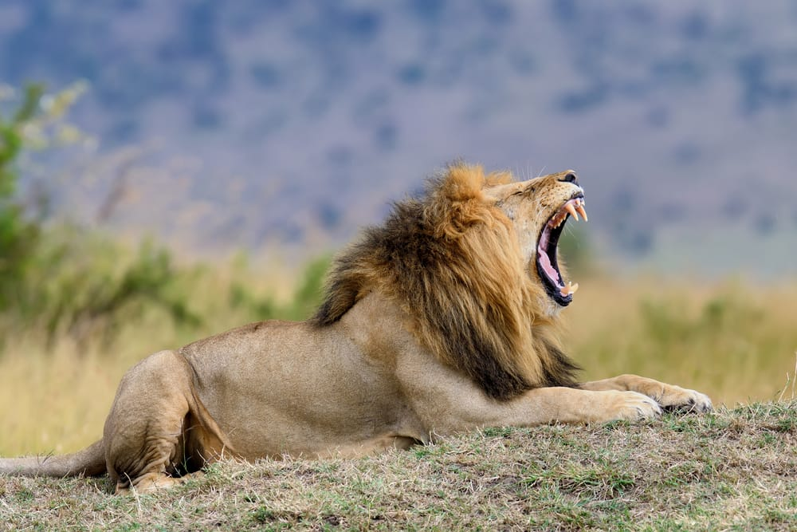
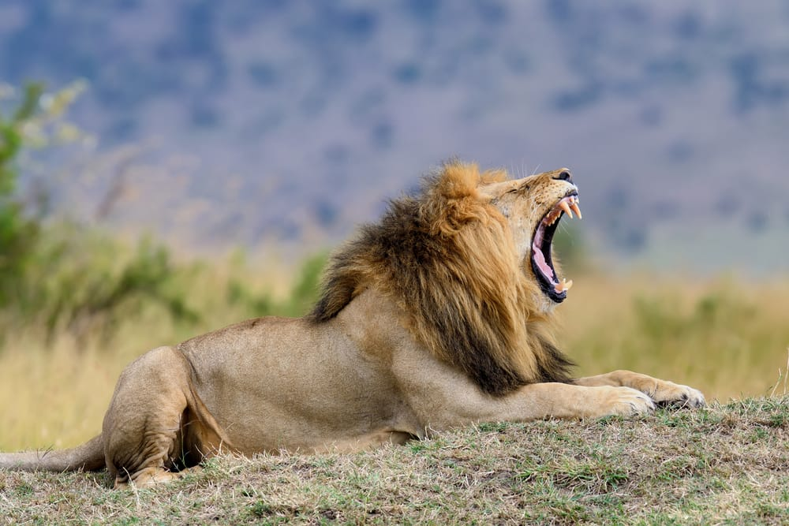
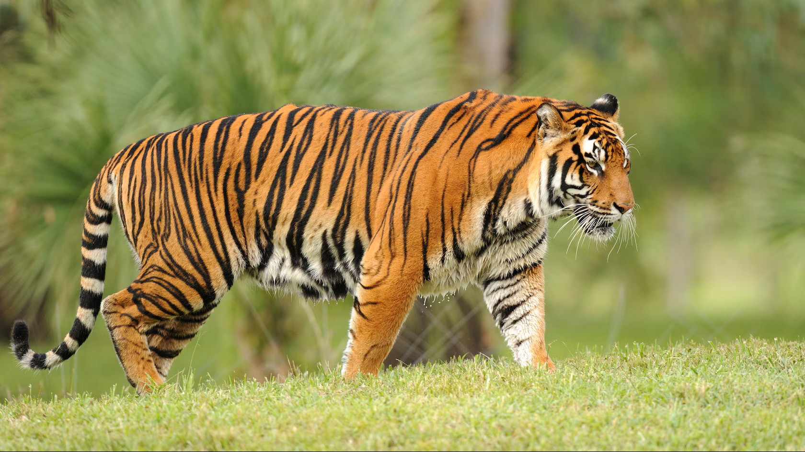
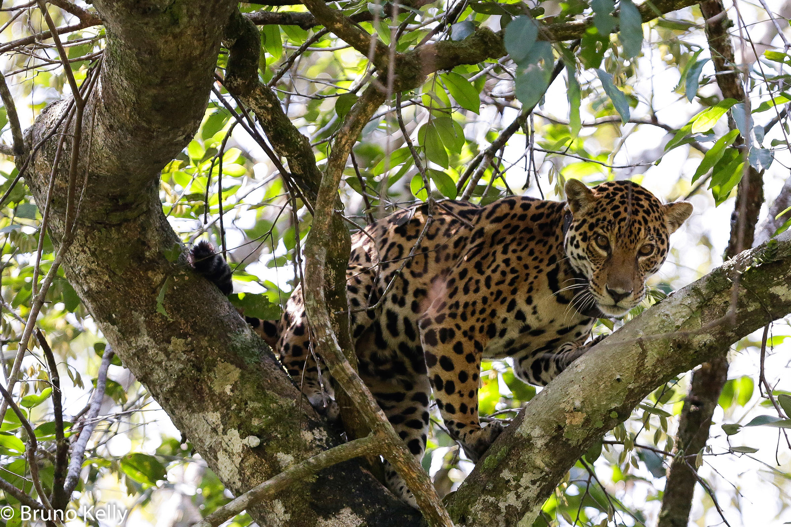

Lion
The Lion is the only truly social cat, living in groups called prides. Males are known for their distinctive manes.
The Lion is the only truly social cat, living in groups called prides. Males are known for their distinctive manes.
The Tiger is the largest cat species in the world, recognizable by its dark vertical stripes on reddish-orange fur.
The Jaguar is the largest cat in the Americas, known for its powerful bite and unique rosette spots with inner dots.
